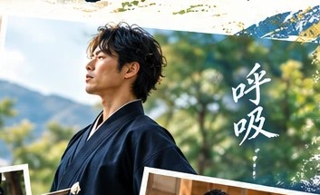
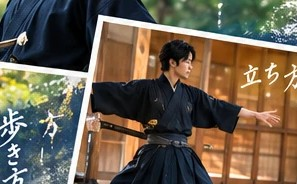

2026年12月5日（土）・6日（日）
湯河原・八亀庵
殺陣師の視点から伝える、
日本古来の呼吸法と歩き方の体験会
呼吸を感じ、立ち方を見つめ、歩き方を変えてみる。
いつもの身体に、少しだけ意識を向けてみませんか？
自分の中心を感じる、新しい身体の発見。
初心者歓迎・運動経験不問
お一人様 3,000円
12月5日（土）・6日（日）13:00〜14:00（各日60分）
毎日、当たり前のように行っている呼吸。
何気なく立ち、歩いている身体。
普段は意識することの少ない、その一つひとつに目を向けてみると、意外な発見があるかもしれません。
特別な道具も、難しい技術も必要ありません。
まずは、自分自身の呼吸と身体を感じるところから始めてみましょう。
殺陣の世界では、刀の動きだけでなく、立ち方、重心、足運び、呼吸など、身体全体の使い方が大切になります。
力任せに動くのではなく、身体の中心を感じながら動く。
そのためには、身体のどこに力が入り、どのように重心が移動し、呼吸と動きがどうつながっているのかを感じることが重要です。
今回の体験会では、殺陣師として培ってきた身体の使い方をもとに、日本古来の呼吸法や身体操作をお伝えします。
刀を使った立ち回りや演武を行うものではありません。
呼吸を入口に、立ち方や歩き方を見つめ直し、自分自身の身体の中心を感じていく時間です。
これまで私が実施してきたワークショップでは、参加者の8割以上の方が、体験後に「軸が通った」と実感したと話してくださっています。
これは、私自身がこれまでの参加者の反応や感想から感じている割合であり、第三者機関による調査や統計に基づくものではありません。
また、残りの方についても、体験の冒頭と比べて、楽に立てるようになったという変化が見られています。
実際に、参加された方からは、
「子どもを抱っこしたときに、身体がブレなくなった」
という日常生活での変化を伝えていただいたこともあります。
こちらは、これまで実施してきたワークショップ（殺陣ワークショップ）で、呼吸法を体験した方々の声です。体験の場でいただいた感想を、そのまま掲載しています。
「しっかりと地面の上に立っていることを感じることができているように感じる」
「これまで漠然と立っていたことを実感した」
「地面の感触ってこうだったのか」
「呼吸だけでこんなに変わるなんて気づかなかった」
「地面を意識した時、初めて深く息を吐くことができたような気がする」
「体の中に太い軸が一本ドーンと立ったような感じがする」
「呼吸って本当に大事だったんですね」
「意識するだけでこんなに変わるなんて想像もしていなかった」
同じ体験をしても、感じ方や気づきは人それぞれです。
大切なのは、誰かと比べることではなく、自分自身の身体でその違いを感じてみること。
今回も、そんな発見のある時間を一緒に過ごせたらと思っています。

まずは、自分自身の呼吸に意識を向けます。普段何気なく行っている呼吸を見つめ直し、身体とのつながりを感じていきます。

身体の中心や重心を意識しながら、自然に立つ感覚を探ります。力を入れて姿勢を作るのではなく、身体がどのように支え合っているのかを感じてみましょう。
呼吸と身体の軸を意識しながら、実際に歩いてみます。いつもの歩き方と何が違うのか。自分自身の身体の感覚を確かめてみましょう。
最後は、体験する前と後の身体の感覚を振り返ります。
知識を覚えることよりも、自分自身で気づくことを大切にしています。
殺陣師・福和倭迅会 代表
1999年より舞台に立ち、2005年頃より殺陣に携わる。
2019年に福和倭迅会を立ち上げ、2024年に活動拠点を神奈川県・西湘地域へ。
日俳連アクション部会 殺陣上級ライセンス。
長年の舞台経験と殺陣を通じて培ってきた身体の使い方をもとに、呼吸・身体操作・日本の身体文化を伝えている。
現在は殺陣のほか、テーブル茶道や口伝数秘術なども通じて、人が自分自身の感覚や中心を見つめ直す場づくりに取り組んでいる。
大切にしているのは、特別な技術を身につけることだけではなく、自分自身の身体と向き合い、日常に呼吸を取り戻すこと。
※基本的に立位での呼吸・身体操作・歩行を行います。
※刀を使った立ち回りや演武は行いません。
呼吸を感じること。
自分の身体を知ること。
そして、いつもの立ち方や歩き方に、新しい発見を見つけること。
特別な経験や準備は必要ありません。
まずは、自分自身の呼吸を感じるところから。
湯河原・八亀庵で、お待ちしています。
2026年12月5日（土）・6日（日）
13:00〜14:00（各日60分）
参加費：お一人様 3,000円
会場：八亀庵（湯河原町）
① 申込フォーム
体験会に申し込む② 八亀庵・湯探歩
電話：080-4638-0202（山本）
③ 福和倭迅会
InstagramのDMからもお申し込み・お問い合わせいただけます。